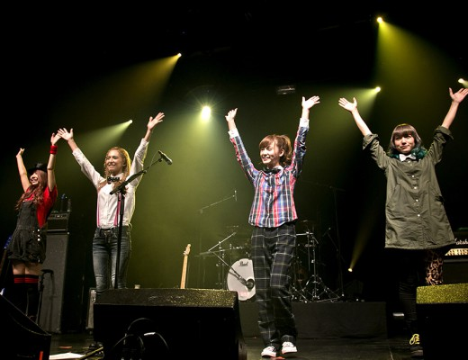

Musique
Edito
Voici notre site d'informations.
Vous êtes sur la page Musique.
La Musique classique
On a souvent l’impression que la musique classique est difficile à découvrir: il y a tellement de compositeurs, dont les œuvres sont si différentes les unes des autres… Les morceaux sont souvent longs, on s’y perd… Et puis, la musique classique, c’est vieux, c’est bourgeois… Et bien la réponse à tout cela est: non!
Source : Introduction à la musique classique
Rock
Le rock est un genre musical apparu dans les années 1950 aux États-Unis et qui s'est développé en différents sous-genres à partir des années 1960, particulièrement aux États-Unis et au Royaume-Uni1,2. Il prend ses racines dans le rock 'n' roll des années 1940 et 1950.

Il est caractérisé par une mélodie vocale dominante, souvent accompagnée par une ou plusieurs guitares électriques, une guitare basse et une batterie ; il peut également être accompagné de synthétiseurs/piano, de cuivres ou d'autres instruments.

Source : http://fr.wikipedia.org/wiki/Rock
Iris Vesterloppe

SCANDAL fut formé en Août 2006 par quatre adolescentes Haruna, Mami, Tomomi et Rina qui se sont rencontrées dans une école de chant et de danse nommée CALESS à Osaka. C'est grâce à leur professeur de musique qu'elles vont se décider à chanter dans les rues chaque weekend à Shiroten au Osaka Castle Park. Très vite, elles gagnèrent des offres provenant des clubs d'Osaka et de Kyoto. Dans le même immeuble où se situait leur studio d'enregistrement se trouvait un magasin pour adulte nommé SCANDAL...
Source : Nautiljon
Arthur Mouchet
Major Lazer est né de la collaboration de Diplo et Switch, deux DJs producteurs de renommée mondiale. C’est par l’intermédiaire de la chanteuse M.I.A. qu’ils font connaissance, et l’alchimie est immédiate. En juin 2009, ils débarquent avec l’album « Guns Don't Kill People... Lazers Do », sorti chez Downtown Records. Pour ce premier opus, enregistré dans les studios Tuff Gong en Jamaïque, le duo s’est entouré d’un casting trois étoiles. Des artistes comme Santigold, Vybz Kartel, Ward 21, Busy Signal, Nina Sky, Amanda Blank ou encore Mr. Vegas leur prêtent leur voix, et Afrojack et Crookers participent à la production. Le premier single « Hold The Line » s’impose immédiatement dans les clubs et le clip vidéo, réalisé par Ferry Gouw, est nommé aux MTV Video Music Awards dans la catégorie révélation de l’année. Le phénomène Major Lazer est lancé.
Source : A modifier ou supprimer
Pop
En tournée dans le monde entier depuis février, le groupe était en concert hier, au Zénith de Paris avec NRJ. On vous raconte tout!
Depuis leurs débuts, les Maroon 5 n’ont jamais été aussi populaire ! Leur dernier album, « V » cartonne dans les bacs, et c’est au Zénith de Paris qu’ils sont venus le défendre hier soir! Premier concert de leur tournée européenne, le groupe a ravi ses fans français, qui ne les avaient pas vus sur scène depuis janvier 2013.
C’est sans surprise qu’Adam Levine et les autres membres ont ouvert leur show par le hit qui a marqué le lancement de leur album, «Animals». Et c’est dans une véritable ambiance de folie qu’ils ont ensuite enchaîné les titres «Wake up Call », «Maps », «Make me wonder», et «Payphone», qui sont aujourd’hui devenus incontournables!
Source : http://www.nrj.fr/artistes-509/fiches-artistes-522/artiste/actu/131-maroon-5.html?actu_id=326959_maroon-5-en-concert-a-paris-on-y-etait-
The Doors
The Doors est un groupe de rock américain fondé en juillet 1965 à Los Angeles, Californie, et dissous en 1973, deux ans après la mort du chanteur Jim Morrison en 1971. Malgré une existence plutôt brève, The Doors est l'un des groupes les plus marquants de l'histoire du rock, et sa musique a influencé de nombreux artistes. Très populaires pendant leurs années d'activité grâce à des titres comme Break On Through ou Light My Fire, les quatre musiciens connurent cependant une plus grande popularité après leur dissolution notamment en raison du culte voué à leur chanteur, Jim Morrison, poète et créateur charismatique, dont la vie tumultueuse et la mort précoce ont contribué à créer la légende1. The Doors a réussi à vendre plus de 32,5 millions d'albums aux États-Unis et plus de 100 millions à travers le monde.
Source : wikipedia
Tim Fromont Placenti
Lille la Nuit avait profité de l'été dernier pour chroniquer "Original Sadtrack" du lillois Tim Fromont Placenti. On est ensuite allé le voir en live au Biplan début 2015. On a pu le revoir en concert ce mercredi 18 mars en première partie de H Burns à la Péniche de Lille. On a donc sauté sur cet événement pour poser quelques questions à Tim entre deux concerts, puisqu'il sera au Métaphone ce vendredi 27 mars 2015 !
C'était un très joli moment. L’accueil technique et humain de la salle est vraiment super ! Nous arrivions avec de bonnes vibrations, puisque notre premier concert là bas, en février 2014 avec l'ami Roger Molls, s'était aussi très bien passé. La dernière fois, nous étions en formation électrique et hier soir, c'était en acoustique, il était assez intéressant de voir comment la salle réagissait aux chansons jouées différemment, tout comme d'offrir cet univers là à un public différent lui aussi.